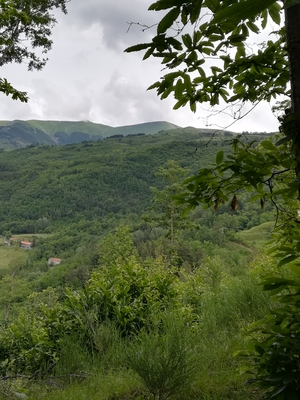

APPennino

Crinale
Il crinale al di sopra di Lancisa supera i 1.700 m s.l.m. circa ed è raggiungibile grazie ad alcuni sentieri. I passi utili all’attraversamento in questo tratto sono quello della Calanca e quello della Croce Arcana.
Passo Croce Arcana Wikipedia
Cammini Storici - Passo della Calanca
Passo della Calanca